Leaderboard
The Leaderboard section allows you to view, filter, and manage leaderboard data based on configurable parameters.
Open Leaderboard
To open the leaderboard, select the corresponding menu item.
{kind=link}
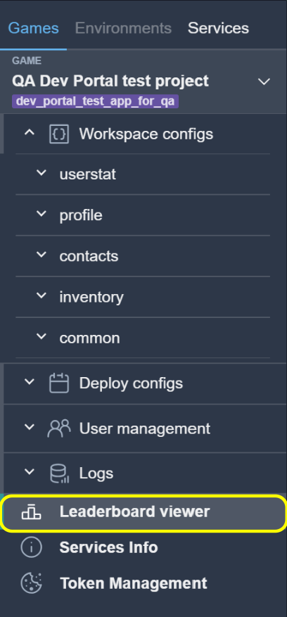
Get Leaderboard Data
To retrieve leaderboard data, configure the required parameters and click the Get Leaderboard button.
{kind=link}
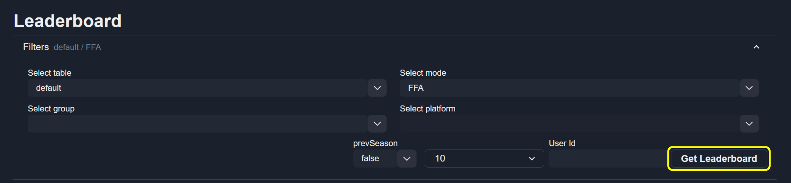
The following parameters are available:
table — Displays the leaderboard for a specific table. (more info).
mode — Displays the leaderboard for a specific mode. (more info).
group — Uses the special statistic value
__leaderboard. (more info).Note
Leave this field empty if a leaderboard group is not used.
platform — Filters the leaderboard by platform (PC, Xbox, PlayStation).
Note
Leave this field empty if platform filtering is not required.
prevSeason — Displays leaderboard data for the previous season.
count — Specifies the number of users displayed per leaderboard page.
User Id — Retrieves leaderboard data for a specific user.
Note
Leave this field empty if a specific user is not required.
{kind=link}
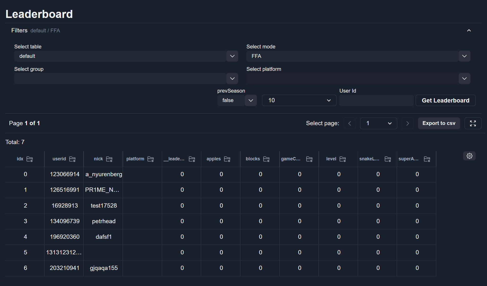
Note
The visibility and ordering of columns follow the settings defined in Table Settings.
Pagination
Use the pagination controls to navigate between leaderboard pages.
{kind=link}
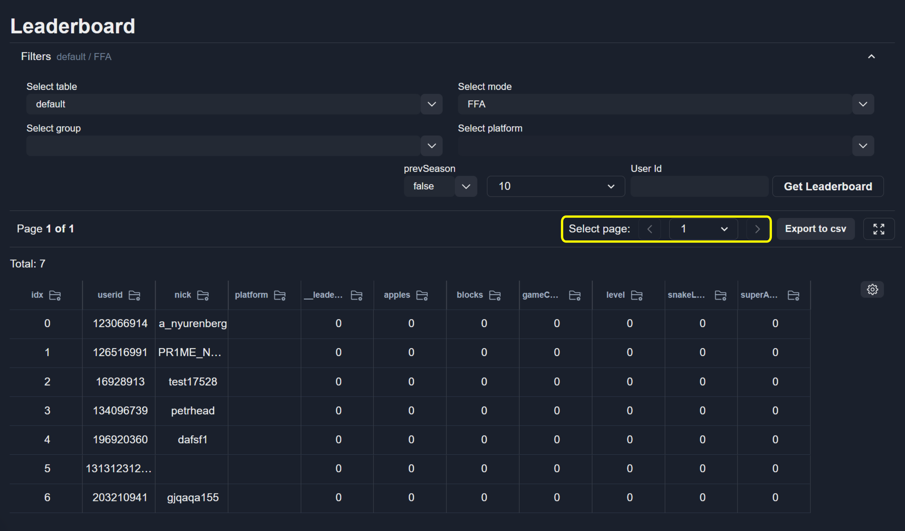
Filters
To collapse the filters block, click the button.
{kind=link}
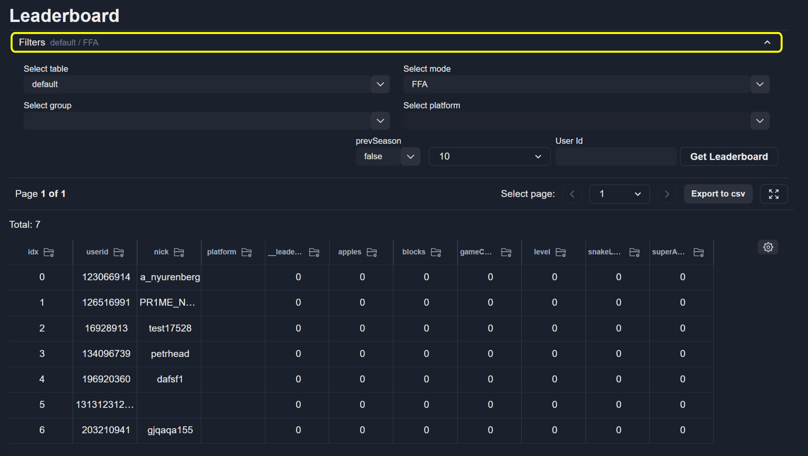
{kind=link}
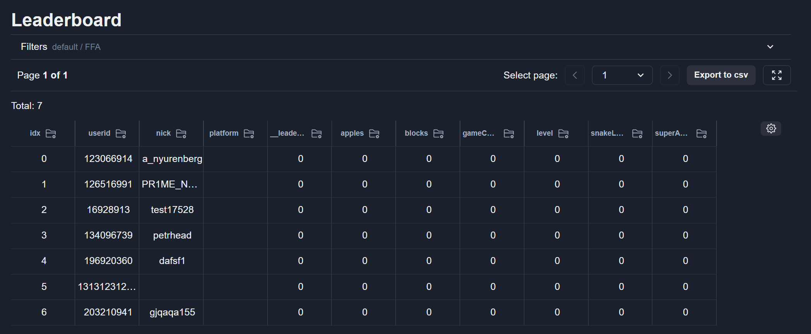
{kind=link}
Export Data
To export the current leaderboard page as a CSV file, click the Export to csv button.
{kind=link}
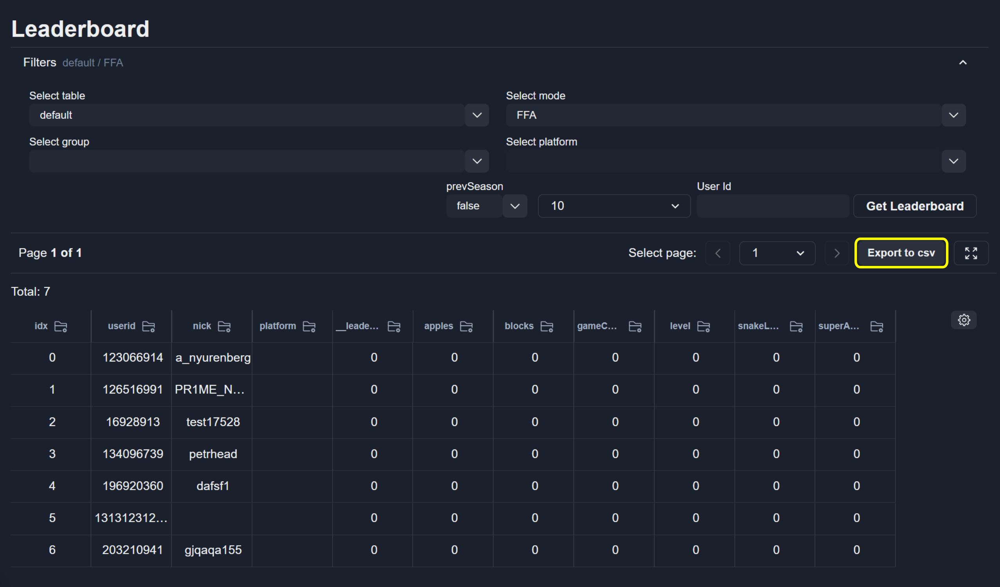
Search by User ID
To find a user by a specific ID, enter it in the User Id field and click Get Leaderboard.
{kind=link}
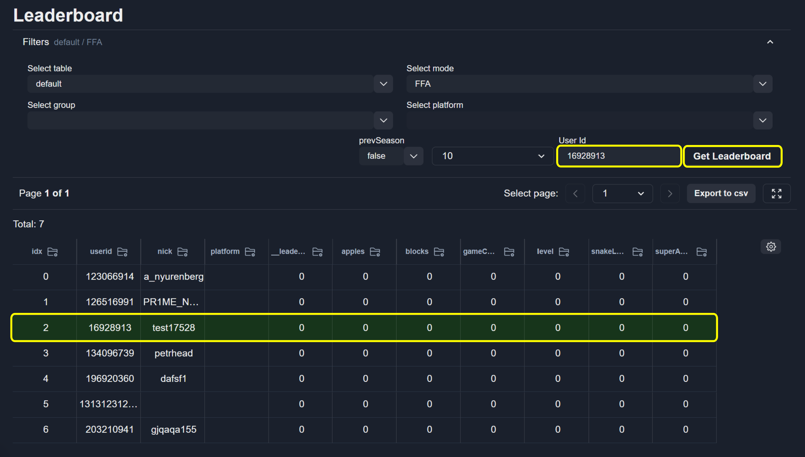
Note
If a specific user is not required, leave this field empty.
Save Leaderboards Between Requests
After clicking Get Leaderboard, the selected filters are saved to your user profile.
{kind=link}
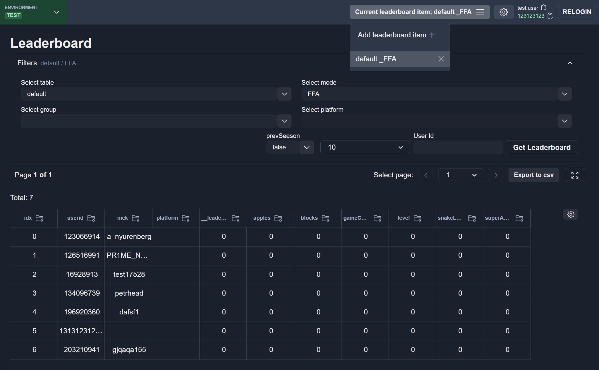
To add a new leaderboard to the saved list, click the corresponding button.
{kind=link}
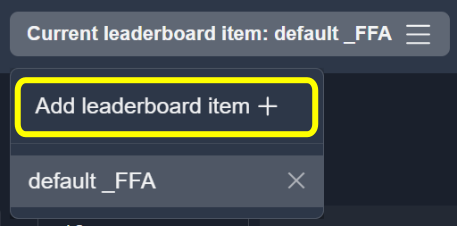
After a new leaderboard is added, an empty table item is displayed.
{kind=link}
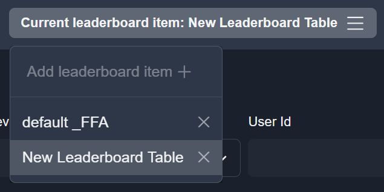
Configure the required filters and click Get Leaderboard to retrieve data and save the leaderboard.
{kind=link}
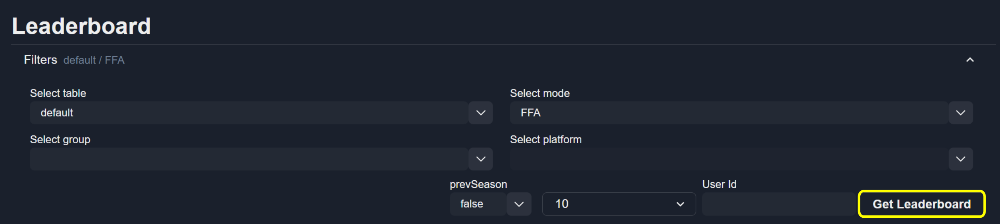
To switch between saved leaderboards, use the top navigation menu.
{kind=link}
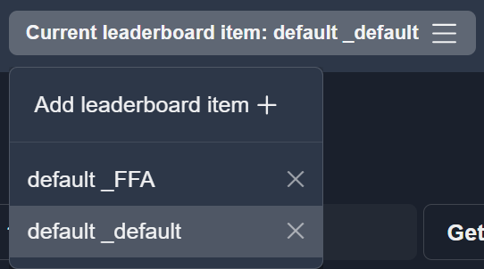
Note
The saved leaderboard name is generated from the filter values.
Delete Saved Leaderboard
To delete a saved leaderboard, click the delete button.
{kind=link}
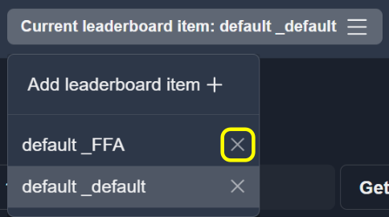
Note
In a saved leaderboard, filter values are replaced after clicking Get Leaderboard.